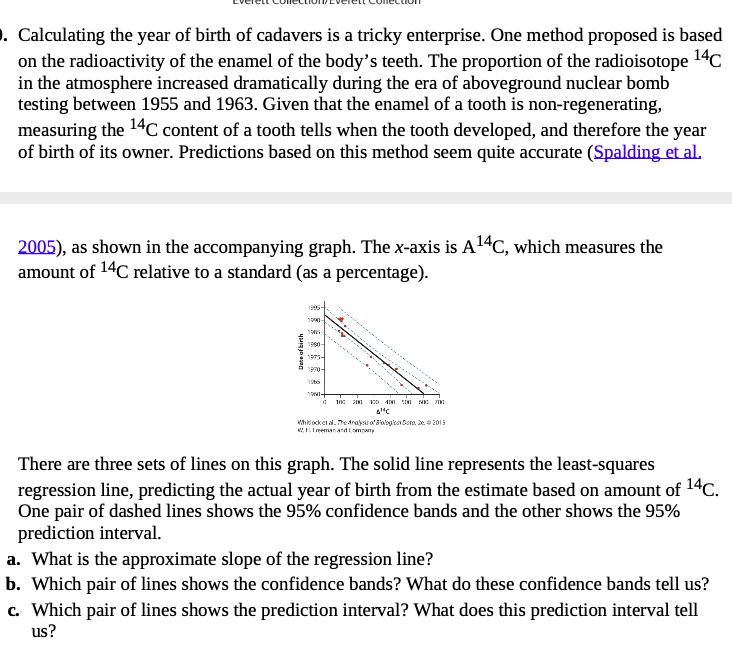

Correlation And Regression Homework
Note: Some datasets are available at http://whitlockschluter.zoology.ubc.ca/data so you don’t have to type anything in (and have to load it!)
1. Correlation - W&S Chapter 16
Data at https://whitlockschluter.zoology.ubc.ca/wp-content/data/chapter16/chap16q15LanguageGreyMatter.csv. Take a look at cor() and cor.test(). Or get saucy and z-transform your variables! (x - mean(x))/var(x)
Remember, a correlation is just a regression on z-transformed variables. Also, note - skip part c for now. But the assumptions are still the assumptions of doing a correlation/regression!
2.
From Fieberg. For this exercise, we will consider the LizardBite data set in the abd library [@abd]. This data set was collected by @lappin2005weapon and featured in a problem in @whitlock2015analysis’s popular introductory statistics book. @lappin2005weapon was interested in whether the bite force (bite) of male lizards in the species Crotaphyutus collaris was predictive of their territory size (territory).
A. Fit a linear model using R that could be used to predict territory size from a lizard’s bite force.
B. Evaluate the assumptions of the model using graphical methods. Be sure to comment on what you are looking for in each plot (e.g., the assumption you are looking to evaluate and what would constitute an assumption violation).
C. Interpret the intercept and slope parameters in the context of the problem.
D. Provide a confidence interval for the slope parameter and interpret the confidence interval. Take a look at confint()
E. Explain what the standard error associated with the slope parameter tells us. Your explanation should include reference to a sampling distribution, and you should define what this term means.
F. Create a confidence interval for the mean territory size associated with a bite force of 5 and a prediction interval for a lizard that has a bite force of 5. Explain the difference between the two intervals. When would you prefer the latter type of interval?
3. W&S Chapter 17-25
Data at https://whitlockschluter.zoology.ubc.ca/wp-content/data/chapter17/chap17q25BeetleWingsAndHorns.csv
Note, you’ll want to use either residuals() or broom::augment() for this one.

- Do any other diagnostics misbehave?
4. W&S Chapter 17-30
https://whitlockschluter.zoology.ubc.ca/wp-content/data/chapter17/chap17q30NuclearTeeth.csv 
- Using
broom::augment()andgeom_ribbon()in ggplot2, reproduce the above plot showing data, fit, fit interval, and prediction interval.
Impress Yourself! Intervals and simulation
Fit the deet and bites model from lab.
Now, look at vcov() applied to your fit. For example:
deet_mod <- lm(bites ~ dose, data = deet)
vcov(deet_mod) (Intercept) dose
(Intercept) 0.09929780 -0.025986850
dose -0.02598685 0.007437073What you have here is the variance-covariance matrix of the parameters of the model. In essence, every time you larger slopes in this case will have smaller intercepts, and vice-verse. This maintains the best fit possible, despite deviations in the slope and intercept. BUT - what’s cool about this is that it also allows us to produce simulations (posterior simulations for anyone interested) of the fit. We can use a package like mnormt that let’s us draw from a multivariate normal distribution when provided with a vcov matrix. For example…
library(mnormt)
rmnorm(4, mean = coef(deet_mod), varcov = vcov(deet_mod)) (Intercept) dose
[1,] 4.291746 -0.5630491
[2,] 4.104941 -0.4731597
[3,] 3.925974 -0.4191502
[4,] 3.631017 -0.3485019produces a number of draws of the variance and the covariance!
IYa. Fit simulations!
Using geom_abline() (look at the helpfile - you’ll see instantly why it’s good here!) make a plot that has the following layers and shows that these simulated lines match up well with the fit CI. 1) the data, 2) the lm fit with a CI, and 3) simulated lines. You might have to much around to make it look as good as possible.
IYb. Prediction simulations!
That’s all well and good, but what about the prediction intervals? To each line, we can add some error drawn from the residual standard deviation. That residual can either be extracted from summary() or you can get the sd of residuals.
Now, visualize the simulated prediction interval around the fit versus the calculated prediction interval around the fit via predict. Go HAM with a clever visualization of all elements on one figure - however you would like
Meta 1.
How well do you feel you understand the assumption testing behind a linear model? If there are elements that confuse you, what are they? Why?
Meta 2.
What concepts of linear regression are the clearest for you? Which are the most opaque?
Meta 3.
Even if you did not do the IYKYK part of this assignment, do you see how simulation can be used with a fit model? Do you feel it would be useful? Do you have gaps in your understanding about why simulation could work here?
Meta 3.
How much time did this take you, roughly? Again, I’m trying to keep track that these assignments aren’t killer, more than anything.
Meta 4.
Please give yourself a weak/sufficient/strong assessment on this assigment. Feel free to comment on why.